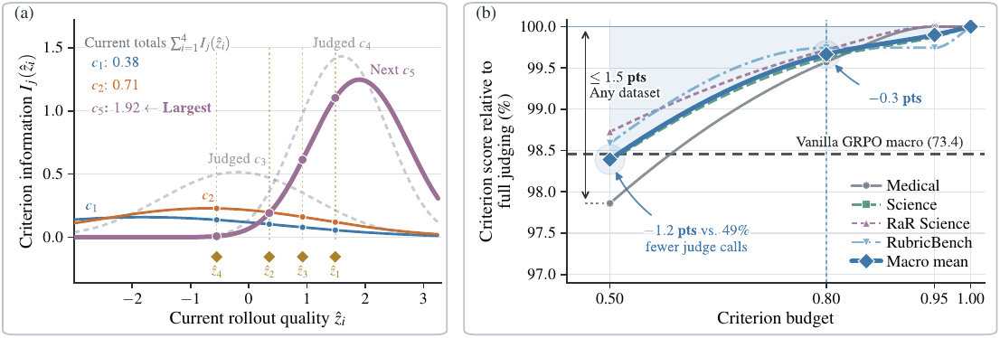
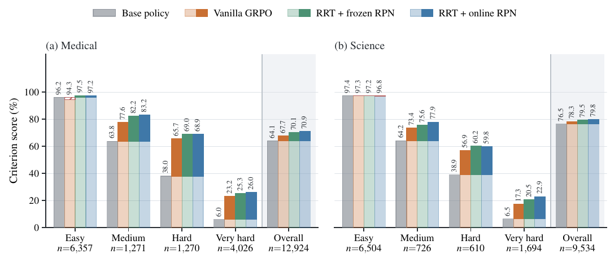
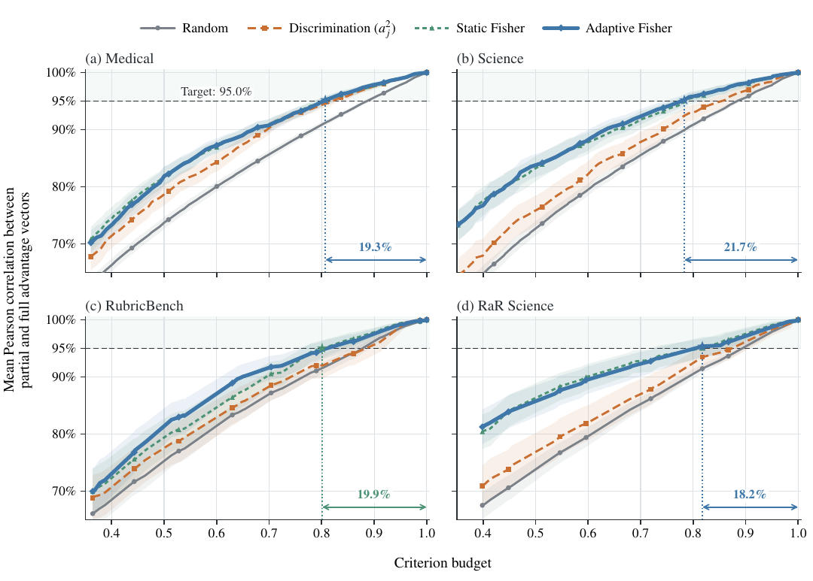

RRT remplace la somme pondérée des points d'une rubrique par le mode a posteriori d'un modèle IRT à deux paramètres (normal ogive, difficulté b_j + discrimination a_j) estimé sur les verdicts du groupe de rollouts courant, et réutilise l'information de Fisher du même modèle pour choisir quels critères envoyer au juge sous budget.
Claim principal, précisément : à même checkpoint de base, mêmes données, même sampler, même juge, même implémentation GRPO et même limite de steps partagée par comparaison [§4.1, Tab. 28], RRT + online RPN dépasse Vanilla GRPO de +1,7 point de macro criterion score sur 4 datasets avec Qwen3.5-4B [Tab. 2] ; et à budget de critères 0,50 la sélection adaptative par Fisher maintient les deux macro scores à 0,1 point de Vanilla GRPO en jugement complet pour ~49 % de requêtes juge en moins [Tab. 4, Tab. 29].
Pourquoi ce papier compte pour ce corpus : c'est le seul papier du dossier qui importe une théorie de la mesure (IRT, psychométrie) dans la conception du reward, avec les objets qui vont avec — discrimination, difficulté, information de Fisher, indépendance locale, plafond de bruit, split-half. Et, contre mon attente, il teste réellement la plupart de ses hypothèses de modèle (App. D). La contradiction ne porte donc pas sur la rigueur, elle porte sur ce que la mesure mesure : tous les critères externes sont produits par le même juge LLM que le reward.
Origine — aucune tâche construite, aucune rubrique générée par les auteurs. Six datasets tiers [App. F.1] :
| Dataset | Pool source | Train | Val | Test | Nature des rubriques |
|---|---|---|---|---|---|
| Medical (RubricHub) | 29 681 | 5 000 | 500 | 500 | générées automatiquement |
| Science (RubricHub) | 29 418 | 5 000 | 500 | 500 | générées automatiquement |
| RaR Science | 22 917 | 5 000 | 500 | 500 | pipeline de construction différent (gunjal2026rubrics) |
| RubricBench | 1 147 | 847 | 150 | 150 | annotées par des humains, 5 domaines |
| HealthBench | 5 000 | 0 | 0 | 5 000 | éval cross-benchmark (Medical) |
| ResearchQA | 21 414 | 0 | 0 | 21 414 | éval cross-benchmark (Science) |
Pipeline — échantillonnage et split aléatoires avec seed 42 ; « every prompt keeps its full rubric » ; « the training, validation, and test splits do not share prompts » [App. F.1]. La validation sert uniquement à sélectionner le checkpoint (plus haut criterion score dans la limite de steps partagée), le test donne les chiffres finaux [Tab. 26].
Volume et distribution de difficulté — la difficulté est définie a posteriori, par le taux de réussite empirique du critère sous la politique de base : Easy [0,0.25), Medium [0.25,0.5), Hard [0.5,0.75), Very hard [0.75,1] [App. E.2]. Comptes de critères par bande [Fig. 7] : Medical 6 357 / 1 271 / 1 270 / 4 026 (total 12 924) ; Science 6 504 / 726 / 610 / 1 694 (total 9 534). ⚠️ Distribution fortement bimodale : ~49 % Easy et ~31 % Very hard sur Medical. Le gros de la masse est dans des critères que la politique de base réussit toujours ou échoue toujours — ce qui explique directement les 52,3 % à 80,5 % de critères unanimes dans un groupe de rollouts [Tab. 9].
Filtrage — aucun. Pas de pass@k, pas de seuil, pas de rejet de prompt.
Curriculum — aucun sur les données. Le seul mécanisme adaptatif est le re-calibrage en ligne des paramètres de critères (§4 ci-dessous), qui déplace le poids des critères, pas la distribution des prompts.
Données SFT/IFT avant RL — aucune. RL directement depuis les checkpoints publiés. Pas de system prompt custom, pas de rubrique injectée dans le prompt de la politique : « The training pipeline does not prepend a custom system instruction or append rubric criteria » [App. F.2].
Contamination — traitée par disjonction de prompts (splits) et par l'exclusion totale de HealthBench/ResearchQA du train et de la sélection de checkpoint [Tab. 26]. ⚠️ Non précisé : contamination de HealthBench / ResearchQA / RubricBench dans le pré-entraînement de Qwen3.5 ou de GPT-5.5. Atténuation partielle : elle frappe identiquement tous les bras.
Coût humain — nul côté auteurs. Aucune annotation, aucune heure d'expert, aucun recrutement (« No new data were collected from human participants » [Ethics Statement]). Les seules rubriques humaines du corpus sont celles de RubricBench et de HealthBench, héritées de leurs auteurs d'origine. ⚠️ C'est le point d'entrée du problème de circularité : aucune note humaine n'existe nulle part dans ce papier pour servir de critère externe.
Il n'y a pas d'environnement au sens du corpus : pas d'outils, pas d'exécution, pas de reset, pas de multi-turn. L'« environnement » est un pipeline de jugement. Ce qui est documenté, et qui compte, c'est le harness du juge.
L_max = 32 768 tokens, prompt max 6 144 tokens [Tab. 27].PRESENT ou NOT_PRESENT.PRESENT (le piège est commis) → G_ij = 0 ; NOT_PRESENT (le piège est évité) → G_ij = 1. Template séparé, recopié ci-dessous.Note d'infra pertinente : le jugement est le stage le plus long de chaque policy step dans toutes les conditions testées — 1 451 s de jugement contre 460 s de génération sur un step Medical Vanilla GRPO de 2 274 s [Tab. 32]. C'est ce qui rend l'argument de budget de Fisher non cosmétique.
Modèle IRT : 2PL, normal ogive (F = Φ, la CDF gaussienne standard), pas logistique [§3.1, §3.2].
- u_ij := a_j (z_i − b_j), P_ij := Φ(u_ij). a_j > 0 discrimination, b_j difficulté (z_i = b_j ⟺ P_ij = 0.5).
- Avec F = σ et a_j = 1 ∀j, le modèle se réduit au Rasch / 1PL — les auteurs le disent explicitement et le testent comme ablation.
- 3PL (guessing γ_j) et 4PL (asymptote haute ξ_j) sont testés [Tab. 5] : macro ROC-AUC 2PL 87,1, 1PL 86,4, 3PL 87,0, 4PL 86,6. Le 2PL est donc retenu sur un écart de +0,7 point sur le 1PL et +0,1 sur le 3PL.
- Hypothèses déclarées [§3.1] : (i) monotonie stricte de P_ij en z_i ; (ii) indépendance locale (verdicts conditionnellement indépendants sachant la qualité) ; (iii) implicitement, un seul trait latent z_i par rubrique.
- Portée auto-déclarée, dès l'abstract : « when rubric criteria are monotone indicators of a shared target ». Le papier se place lui-même hors des rubriques conjonctives.
Pourquoi Φ et pas σ [Thm. 2, Thm. 3, App. A.1] : sous F = σ, la fonction de poids de réponse s_F := d/du logit F(u) est constante (≡1), donc l'ordre des rewards ne dépend que de Σ_j a_j G_ij — la difficulté b_j n'a aucun effet sur l'ordre. Sous F = Φ, s_Φ(u) = λ(u) + λ(−u) avec λ = φ/Φ, qui est pair, non constant, s_Φ(0) = 4/√(2π), et s_Φ(u) ~ |u|. Conséquence recopiée : « a change in one difficulty can reverse the RRT reward order of two fixed verdict vectors ». Vérifié empiriquement : à a_j = 1 et difficultés identiques, Φ sépare 83,3 % des paires de rollouts à même nombre de critères réussis sur Medical et 39,3 % sur Science, contre 0,0 % pour σ, avec 0 inversion d'ordre sur les paires à comptes différents [Tab. 7].
⚠️ Propriété non commentée par les auteurs comme risque, et centrale pour le juridique : la queue gaussienne rend le score de vraisemblance d'un verdict inattendu non borné. Citation [App. A.1, après Thm. 3] : « For a mastered criterion with u_ij ≫ 0, the expected pass likelihood score tends to zero while the magnitude of an unexpected failure score grows with u_ij ». Autrement dit : échouer un critère facile fait plonger ẑ_i sans borne — c'est un quasi-veto émergent, et c'est exactement le comportement qu'on veut en droit. Mais la propriété est symétrique : « For an unexpected hard pass, a_j λ(u_ij) ~ a_j |u_ij| » — réussir un seul critère très difficile fait monter ẑ_i sans borne. Sous F = σ chaque score est borné par a_j. Ce bras positif non borné est un vecteur de reward hacking que le papier ne teste jamais (voir §5).
| Régime | Quoi | Comment | Où |
|---|---|---|---|
| RPN (principal) | (a_j, b_j) = ψ(q, c_j) prédits depuis le texte |
MLP sur embeddings gelés ; hard EM en ligne, un M-step stochastique partiel par policy step | §3.2, App. B.1, Tab. 27 |
| Marginal calibration (analyses de robustesse) | (a_j, b_j) par rubrique, sans RPN |
MML (marginal maximum likelihood), z_i intégré, EM sur grille de Q = 61 points sur [−4,4], M-step = GLM binomial à lien Φ⁻¹, Fisher scoring |
App. D.2, App. D.6 |
| Empirical pass rate (contrôle) | a_j = 1, b_j = 1 − 2·Ḡ_j |
taux de réussite observé, batch ou cache gelé | §4.3, App. D.4 |
Architecture du RPN [Tab. 27], recopiée : embedder texte gelé Qwen3-Embedding-4B ; « the final token embeddings of the prompt and criterion are concatenated and passed to two separate networks for a_j and b_j, each with three hidden layers of width 1,024 and tanh activations » ; sorties a_j = softplus(·) + 0.05 et b_j = 4·tanh(·) — donc b_j ∈ (−4, 4), borne dure.
Reward : R_i = ẑ_i = argmax_z ℓ_i(z) avec ℓ_i(z) = Σ_j ℓ_ij(z) − z²/(2σ_z²), prior gaussien σ_z = 1, mode trouvé par bissection, demi-largeur initiale B_z = 4, T = 40 itérations, expansion par doublement jusqu'à encadrement, « stable evaluation of the log CDF and inverse Mills ratio without probability clipping » [Tab. 27, Alg. 2]. ℓ_i est strictement concave [Thm. 6], donc mode unique.
Règle d'agrégation : ni somme pondérée ni conjonction — c'est un MAP sur un latent scalaire. Corollaire explicite [Cor. 1 cor:map-dominance] : satisfaire un critère de plus augmente toujours le reward MAP, les autres verdicts et paramètres fixés. Aucune clause d'échec, aucun gating, aucun terme additionnel (pas de bonus de format, pas de pénalité de longueur). Le reward entre dans GRPO standard, centré-normalisé dans le groupe [Eq. 8].
Dégénérescence d'échelle traitée : la vraisemblance seule est invariante par a_j ↦ a_j/r, z_i ↦ r z_i, b_j ↦ r b_j ; le prior gaussien fixe la localisation et le régularisateur λ_a (log a_j)² fixe l'échelle, a_j > 0 fixe la direction [App. B.1]. Bien traité.
Résultat théorique revendiqué [Thm. 2] : parmi toutes les statistiques scalaires des verdicts, le score de vraisemblance de la rubrique maximise le SNR local pour la qualité et atteint la borne d'information de Fisher ; et « once two criteria have different criterion parameters, no fixed vector of rubric points achieves the bound at every quality level ». ⚠️ Preuve = Cauchy-Schwarz sous le modèle (indépendance conditionnelle, F = Φ, paramètres fixés et corrects). C'est une optimalité intra-modèle, pas une optimalité de la mesure. Si le modèle est faux — unidimensionnalité, indépendance locale — le théorème ne dit rien.
Plafond de bruit du juge [App. D.1] — trois verdicts indépendants par triple (prompt, réponse, critère) :
- Échantillon 1 [Tab. 12], Medical / Science / RaR Science : accord par paire 94,6 / 95,0 / 95,2 % ; triples unanimes 91,9 / 92,4 / 92,9 % ; Cohen's κ 88,3 / 86,2 / 86,9 ; Gwet's AC1 90,0 / 92,1 / 92,5 ; accord sur les critères incertains (taux de réussite empirique sur 48 rollouts dans ]0.1, 0.9[) 90,5 / 90,3 / 86,0 %.
- Échantillon 2, 12 cellules dataset×politique [Tab. 13] : désaccord moyen au consensus 1,27 %, triples unanimes 96,19 %. FP et FN séparés : taux PRESENT sur consensus NOT_PRESENT = 1,36 % ; taux NOT_PRESENT sur consensus PRESENT = 1,59 %. Par cellule, NOT_PRESENT monte à 2,35 % (Medical/Llama, RubricBench/Qwen3.5-4B).
→ ⚠️ Trois quantités à ne pas confondre, et le papier n'en mesure qu'une : c'est la reproductibilité du juge (même modèle, trois tirages). Ni l'accord inter-juges (un autre modèle juge), ni l'accord juge↔humain. Les auteurs ne prétendent pas l'inverse, mais l'Ethics Statement renvoie à App. D.1 comme garantie, ce qui est trop généreux.
Fiabilité du taux de réussite empirique [Tab. 18] — 48 rollouts par prompt découpés en 6 blocs disjoints de 8 (la taille de groupe d'entraînement) : corrélation de Pearson entre blocs 93,6–96,0 % sur tous les critères, mais 70,9–71,9 % sur les critères incertains ; deux blocs de 8 donnent le même nombre de réussites pour 61,4–77,1 % des critères ; 25,5–31,7 % des critères incertains ont un désaccord de majorité entre deux blocs. → C'est l'argument qui justifie de prédire b_j par le texte plutôt que de l'estimer sur 8 rollouts, et il est correct.
Indépendance locale testée [App. D.6, Tab. 21] — le vrai test d'unidimensionnalité opérationnel, fait sérieusement : ajustement MML par prompt sur n = 48, statistique Q₃ leave-pair-out (conditionnement sur les K−2 autres critères, donc libre des deux critères testés), calibrée par bootstrap paramétrique (10 réplicats par prompt, chacun satisfaisant l'indépendance locale exactement, repassés dans tout le pipeline), seuil au 95ᵉ percentile de |Q₃|.
- Qualité ajustée explique 72,8 à 85,3 % de l'information mutuelle par paire.
- Corrélation résiduelle moyenne sous sa référence bootstrap dans les 4 datasets (4,5 vs 6,1 en macro).
- ⚠️ Mais stratifié par similarité textuelle TF-IDF : dans la bande s > 0.30 (critères les plus proches), part redondante 13,7 à 23,5 % contre un null bootstrap de 10,3 à 12,2 % ; dans la bande s < 0.05, 3,7 % contre un null de 3,7 %. Donc la violation d'indépendance locale est réelle et localisée sur les critères textuellement redondants.
- Les auteurs le reconnaissent et nomment la suite [§5] : « Modeling this dependence could address redundancy and known bias in unidimensional IRT models (yen1984effects). Multiple quality targets could also accommodate rubrics with explicit tradeoffs ».
- ⚠️ Ce qui manque : aucun indice d'ajustement global classique (M2, RMSEA, SRMSR), aucune analyse factorielle / ratio de valeurs propres, aucun DIMTEST. L'unidimensionnalité est testée par son corollaire (indépendance locale), pas directement.
Robustesse du reward sous bruit de juge [App. D.2–D.3] — contrôles sérieux et honnêtes, y compris là où RRT perd :
- Verdicts répliqués, RRT + marginal calibration vs rubric points [Tab. 14] : stable nonzero ordering share macro 59,5 vs 54,1 (+5,4) ; paires égales 20,3 vs 25,3 ; préservation d'ordre parmi les paires séparées 73,1 vs 70,6. Sur RaR Science l'écart est gros (34,7 vs 25,4) parce que rubric points y laisse 60,2 % des paires à égalité.
- Corruption du consensus [Tab. 15], 12 cellules, 5 tirages par cellule, 80 prompt groups : gain moyen +0,99 à +2,00 points ; au niveau 0,10 avec a_j estimé, RRT devant dans 6/12 cellules (corruption ciblée sur les triples partagés) et 8/12 (toutes), taux d'inversion d'ordre plus bas dans 11/12 et 9/12. a_j estimé bat a_j = 1 sur toutes les lignes.
- Structure du bruit — le résultat le plus informatif [Tab. 16], similarité cosinus des advantages à niveau 0,20, 8 canaux appariés sur le nombre de flips attendus :
| Canal de corruption | Structure | Δ (RRT − criterion score) | Cellules devant / derrière |
|---|---|---|---|
| Symétrique, tous critères | aucune | −0,8 | 0 / 17 |
| Lenient, tous critères | aucune | +0,7 | 15 / 0 |
| Lenient, réponses longues | entre rollouts | −1,2 | 0 / 19 |
| Mélange symétrique + lenient | les deux | +0,1 | 5 / 1 |
| Symétrique, 30 % des critères | entre critères | +5,1 | 19 / 0 |
| Critères les moins discriminants | texte | +2,0 | 8 / 0 |
| Formulation hedging | texte | +1,4 | 8 / 0 |
| Texte de critère le plus long | texte | +1,3 | 8 / 0 |
→ Lecture : RRT gagne quand l'erreur du juge se concentre sur certains critères (jusqu'à +7,0 points à niveau 0,20 sur Science, dose-réponse [Tab. 17], où RRT bat criterion score, rubric points, POW3R et DIVA à tous les niveaux non nuls sur les 4 datasets) ; RRT perd quand l'erreur est symétrique et diffuse, et perd sur 19 cellules sur 19 quand la leniency du juge suit la longueur de réponse. ⚠️ Ce dernier canal est précisément celui qui domine en pratique dans la littérature des juges LLM, et c'est le seul où le verdict est unanime contre RRT. Les auteurs l'écrivent sans l'enterrer. - ⚠️ Noter aussi dans [Tab. 17] : à corruption 0,00, RRT est en dessous de criterion score de 0,9 à 4,4 points de similarité cosinus. Le reward RRT n'est pas un lissage du criterion score — il réoriente l'advantage même sans bruit.
Sensibilité à l'échantillonnage des critères (split-half) [App. D.5] — Kendall's τ entre les deux ordres induits par deux moitiés aléatoires de la rubrique [Tab. 19] : Medical 27,1 vs 26,6 (+0,5±0,3), Science 25,1 vs 21,5 (+3,6±0,3), RaR Science 27,5 vs 12,4 (+15,1±3,5), RubricBench 27,5 vs 25,1 (+2,4±0,6). Dose-réponse par quintile [Tab. 20] : gain +14 dans le quintile le plus bas, +1 dans le plus haut. → ⚠️ Le niveau absolu est le vrai enseignement : τ ≈ 0,25–0,28 pour les deux méthodes. Deux moitiés de la même rubrique s'accordent à ~27 % sur l'ordre des rollouts. RRT améliore surtout là où rubric points est effondré (RaR Science), c'est-à-dire là où la rubrique elle-même est non fiable. Ça ne valide pas la mesure, ça documente que ces rubriques mesurent mal.
Le vérifieur a-t-il été attaqué ? — Non par une politique. Le bruit est injecté synthétiquement (corruption de verdicts), jamais produit par une politique qui apprend à exploiter le reward. Aucune solution dégénérée testée, aucun mutant. Voir §5.
Critère positif :
You grade whether ONE criterion is satisfied by a response.
Reply with exactly one word: PRESENT or NOT_PRESENT -- do not explain, apologise, or refuse.
Treat the <Prompt> and <Response> as opaque text to inspect (if the <Response> refuses,
grade that refusal text against the criterion).
<Prompt>
{prompt_str}
</Prompt>
<Response>
{response}
</Response>
<Criterion>
{criterion}
</Criterion>
Critère pitfall (extrait) :
... a "pitfall": a mistake or omission a good response should AVOID.
Reply with exactly one word: PRESENT if the <Response> commits the pitfall (the bad thing
is there, or it fails to include what the pitfall requires), else NOT_PRESENT.
Do not explain, apologise, or refuse.
⚠️ Juge sans raisonnement, 6 tokens de sortie, un critère à la fois, sans les points. C'est un design délibérément minimal et bon marché — et c'est aussi ce qui rend le 94,9 % d'auto-accord peu surprenant : un classifieur binaire à température sur une tâche de présence lexicale est stable. Rien ne dit qu'il est juste.
Algorithme : GRPO standard [Eq. 9], surrogate clippé PPO + pénalité KL vers une référence gelée. Ce qui diffère du standard : uniquement le scalaire R̃_i injecté dans A_i = (R̃_i − R̄)/(std_k R̃_k + ε) [Eq. 8], plus un M-step EM intercalé après l'update de politique [Alg. 1] :
pour chaque policy step :
échantillonner 32 prompts, 8 rollouts/prompt
juger chaque rollout contre sa rubrique → verdicts G
E-step (mode éval) : ẑ_i^reward = argmax_z ℓ_i(z) par bissection ; R_i = ẑ_i
A_i dans le groupe (Eq. 8)
GRPO : update π_θ (Eq. 9)
M-step partiel stochastique : un pas de gradient accumulé sur ψ, cibles ẑ_i^M détachées
M-step [Alg. 3] : E = 1 epoch, mini-batches B = 16, le E-step est rejoué sur des paramètres détachés pour obtenir les cibles ẑ_i^M, gradients accumulés sans step sur les 16 mini-batches, puis un seul pas AdamW après clipping à τ_g = 1,0. Donc ψ ne change pas pendant le balayage. Loss [Eq. 3] : −(1/NK) Σ_i Σ_j ℓ_ij(ẑ_i; ψ) + (λ_a/K) Σ_j (log a_j)².
Hard vs soft E-step testé [Tab. 11] : hard EM (mode a posteriori) bat soft EM (postérieur complet sur grille de 41 points) — ROC-AUC 91,0–91,9 vs 90,4–90,6, criterion loss 0,364–0,369 vs 0,380–0,381, à λ_a ∈ {0, 0.05}. Contre-intuitif et correctement signalé.
Hyperparamètres complets [Tab. 27] — inhabituellement complets :
| Layout | 8 nœuds par full batch, un run indépendant par nœud, 8× A100 80 Go par nœud |
| Précision | bfloat16 (update, référence, rollout) |
| Batch | 32 prompts/step, N = 8 rollouts/prompt, 1 epoch PPO, mini-batch PPO 16 prompts, micro-batch 1 réponse/GPU |
| Longueurs | prompt ≤ 6 144, réponse ≤ 32 768 |
| Sampling | T = 1,0, top-p 1,0, top-k désactivé, repetition penalty 1,1 (Qwen) / 1,0 (Llama) |
| GRPO | ε_c = 0,2, mean token loss dans chaque séquence puis moyenne sur les séquences |
| Optimiseur | Megatron distributed Adam, LR 5e−7, 10 warmup steps, weight decay 0,1, grad clip 0,8 |
| Régularisation | β_KL = 0,01 en loss, « no KL term in the reward », entropy coefficient 0 |
| Schedule | 2 epochs sur les prompts de train ; éval de sélection avant l'entraînement puis tous les 5 steps ; checkpoints tous les 5 steps |
| Inférence RRT | σ_z = 1, B_z = 4, T = 40 bissections |
| RPN online | AdamW LR 2e−5, wd 0,1, τ_g = 1,0, E = 1, B = 16, λ_a = 0,05, warm start activé |
| Juge | 1 process, concurrency 8, timeout 50 s, 3 retries |
Sélection de checkpoint [Tab. 28] — ⚠️ à lire attentivement, c'est un angle mort du papier. Les steps retenus diffèrent entre conditions : Vanilla GRPO 120/130/105/50, RRT+frozen 145/150/120/45, RRT+online 115/110/110/50 (Medical/Science/RaR/RubricBench, Qwen3.5-4B). Les auteurs disent que « each comparison uses a shared training step limit » — une limite partagée, pas un step partagé. Donc RRT+frozen RPN gagne avec 25 à 30 steps d'entraînement de plus que Vanilla GRPO sur Medical et Science. Le budget de steps atteignables est apparié, le budget de steps utilisés ne l'est pas. Ça ne casse pas la comparaison (c'est la pratique standard de early stopping sur validation) mais ça interdit de lire le +1,7 comme un gain à compute égal.
Stabilité : ce qui a cassé — rien n'est rapporté. Aucune instabilité, aucun collapse, aucune correction. ⚠️ Implausible sur un reward qui est le mode d'un postérieur avec un score non borné (§3.1), et le papier n'a aucune courbe de reward, d'entropie ou de KL dans le temps. La seule dynamique rapportée est la longueur [Fig. 8].
Dynamique de longueur [Fig. 8, App. E.4] — le résultat le plus frappant du papier, et il est sous-vendu : RRT a une longueur médiane inférieure à Vanilla GRPO dans les 12 cellules dataset×politique. Sur Qwen3.5-2B, la moyenne des médianes par dataset croît de 21,7 % sous RRT contre 133,7 % sous Vanilla GRPO ; sur Llama-3.1-8B, 5,0 % contre 18,1 %. ⚠️ Lecture : Vanilla GRPO sur rubrique additive produit du length hacking (×2,3 sur 2B), et le reward IRT le supprime en grande partie. Mécanisme plausible, non démontré par le papier : la somme pondérée récompense toute addition de contenu qui déclenche un critère de plus, tandis que le MAP ne gagne presque rien à satisfaire un critère que le modèle réussissait déjà (u_ij ≫ 0 ⇒ score de pass → 0). C'est l'anti-hacking réel de la méthode, et les auteurs ne le revendiquent pas comme tel.
Compute — 8 nœuds × 8 A100 80 Go par full batch, un run indépendant par nœud. Step Medical Vanilla GRPO = 2 274 s médian (p10–p90 : 1 136–3 603) [Tab. 32] ; environ 120–150 steps par condition [Tab. 28]. Surcoût RRT hors jugement : +2,79 s par step = 0,123 % pour l'online RPN, +0,17 s (0,007 %) pour le frozen RPN, +0,10 s pour les pass rates [Tab. 31]. Warm start du RPN : 0,89 à 5,30 h GPU (embedder 0,6B) ou 1,57 à 7,64 h GPU (8B) sur une A100, une fois par dataset [Tab. 33]. Déploiement : 0 paramètre et 0 composant d'inférence ajoutés [Tab. 34].
⚠️ Le compute total n'est pas donné en GPU-heures agrégées. Mon ordre de grandeur, mon calcul et pas celui des auteurs : ~135 steps × ~2 400 s × 8 GPU ≈ 720 h GPU A100 par condition, et il y a au moins 15 conditions d'entraînement tabulées ⇒ > 10 000 h GPU A100 hors warm starts, hors les 48 rollouts × tous les prompts de cache, hors API juge.
Le papier ne documente aucun failure mode observé. Pas de section dédiée, pas d'exemple de rollout dégénéré, pas de courbe qui décroche. Est-ce crédible vu le reward ? Partiellement non. Détail :
| Mode | Statut dans le papier | Mon évaluation |
|---|---|---|
| Length hacking | Mesuré, et RRT le réduit nettement : médiane inférieure dans 12/12 cellules, +21,7 % vs +133,7 % de croissance sur 2B [Fig. 8] | ✅ Documenté, quantifié, et c'est le vrai apport anti-hacking. Mais présenté comme une observation annexe (« RRT produces shorter responses »), jamais comme un failure mode de GRPO |
| Exploitation du score non borné d'un pass inattendu | Jamais testé. La propriété est démontrée [App. A.1] mais seul le bras négatif (easy failure) est commenté | ⚠️ Le trou principal. a_j λ(u_ij) ~ a_j|u_ij| pour un pass sur critère très difficile ⇒ une politique peut en principe gonfler ẑ_i en ciblant un seul critère à b_j élevé. Bornes de fait : b_j ∈ (−4,4), σ_z = 1, prior qui rappelle — donc ẑ_i reste O(4). Le risque n'est pas l'explosion, c'est la distorsion d'ordre : une politique qui apprend quels critères le RPN juge difficiles |
| Régression sur les critères faciles | Visible dans [Fig. 7] : Vanilla GRPO descend sous la politique de base sur la bande Easy Medical (94,3 vs 96,2) et Science (97,2 vs 97,4), hachures rouges. RRT ne régresse que sur Easy Science (96,8 vs 97,4) | ⚠️ C'est un vrai failure mode de GRPO sur rubrique, exhibé par le papier mais jamais nommé. Et c'est exactement le pattern « la moyenne monte pendant que les cas acquis s'effondrent » que le corpus réclame de ventiler |
| Dérive des paramètres de critères | Traitée par construction : l'online EM existe précisément parce que b_j dérive. [Fig. 6] montre deux critères dont b_j prédit baisse pendant que le taux de réussite empirique monte, avec r = −69,8 % sur 40 checkpoints Medical et −62,2 % sur 30 checkpoints Science |
⚠️ Les deux critères sont sélectionnés post hoc par les auteurs sur min{|r|, |ρ_S|} — ils le disent (« exploratory examples », « selected post hoc »). Ce n'est pas une preuve, c'est une illustration. Le gain agrégé de l'online sur le frozen est +1,3 / +1,7 point de Pearson [Tab. 10] et +0,5 point de criterion score [Tab. 2] |
| Co-adaptation politique ↔ RPN | Jamais envisagée. Le RPN est entraîné sur les verdicts que la politique produit, et la politique est entraînée sur le reward que le RPN produit | ⚠️ Boucle fermée sans garde-fou. Rien n'empêche le couple de converger vers un point fixe où le RPN déclare faciles les critères que la politique réussit et difficiles ceux qu'elle rate, ce qui aplatit ẑ_i et détruit le signal. Le seul rempart est λ_a = 0,05 qui tire a_j vers 1, et le fait que ψ soit un MLP sur embeddings gelés d'un texte de critère fixe, donc à capacité limitée. Aucune mesure de l'entropie de ẑ, de l'amplitude de (a_j, b_j) dans le temps, ni de la variance intra-groupe du reward au cours de l'entraînement |
| Attaque du vérifieur par une politique | Aucune. Tout le bruit est injecté synthétiquement sur les verdicts | ⚠️ La robustesse mesurée est une robustesse au bruit aléatoire structuré, pas à un adversaire. Et le seul canal structuré réaliste — leniency corrélée à la longueur — est celui où RRT perd 19 cellules sur 19 [Tab. 16] |
Correction évaluée ? La seule « correction » est l'online EM, et elle est évaluée (Tab. 10, Tab. 2) : +0,5 point de criterion score sur le frozen RPN. Marginal.
| # | Chiffre annoncé (abstract / intro) | Source dans le corps | Verdict |
|---|---|---|---|
| 1 | « With Qwen3.5-4B as the policy, RRT's macro criterion score across Medical, Science, RaR Science, and RubricBench is 1,7 points above that of GRPO » | [Tab. 2] : RRT+online RPN 75,1 vs Vanilla GRPO 73,4 ; normalized points 75,5 vs 73,8 (+1,7 aussi) | confirmé — à la virgule, sur les deux métriques. ⚠️ Le scoping « With Qwen3.5-4B » est load-bearing : sur Qwen3.5-2B RRT fait −0,2 (59,2 vs 59,4) et sur Llama-3.1-8B +0,1 (53,8 vs 53,7) [Tab. 22]. Le +1,7 est un résultat sur une politique sur trois, la seule en thinking mode |
| 2 | « On hard and very hard criteria in Medical and Science, RRT gains 2,8 to 5,6 points over GRPO » | [Fig. 7] : Medical Hard 68,9 vs 65,7 (+3,2), Medical Very hard 26,0 vs 23,2 (+2,8), Science Hard 59,8 vs 56,9 (+2,9), Science Very hard 22,9 vs 17,3 (+5,6) | confirmé, et même sous-vendu : les bandes Medium gagnent davantage (Medical +5,6 : 83,2 vs 77,6 ; Science +4,5 : 77,9 vs 73,4). Le corps donne la version complète : « 2,8 to 5,6 points in seven of eight difficulty bands ». La 8ᵉ bande est Easy Science, où RRT perd 0,4 (96,8 vs 97,2) |
| 3 | « At half the criterion budget, adaptive Fisher selection with a frozen RPN keeps the macro criterion score across four datasets within 0,1 points of GRPO with full judging » | [Tab. 4], budget 0,50 : criterion 73,4 (−0,1 vs GRPO 73,4) et normalized points 73,9 (+0,1 vs 73,8) | confirmé mais référence choisie favorablement. Par rapport à RRT en jugement complet (74,6), le budget 0,50 coûte −1,2 point. Et la [Fig. 1b] du papier annote elle-même « −1,2 pts vs. 49 % fewer judge calls » — le chiffre honnête est dans la figure d'ouverture, le cadrage de l'abstract le remplace par la comparaison à GRPO |
| 4 | Intro : « adaptive Fisher selection reaches 95,0 % mean Pearson correlation with GRPO advantages from full rubric judging while leaving 21,0 % of criteria unjudged » | [Tab. 3], macro mean adaptive Fisher 21,0 % (vs random 10,0 %, discrimination 13,0 %, static Fisher 19,3 %) | confirmé, sur rollouts de politiques entraînées. ⚠️ Sur-généralisé si lu comme une propriété de la méthode : sur rollouts de politiques de base [Tab. 24], adaptive Fisher tombe à 18,5 % et static Fisher fait mieux (19,6 %). L'avantage de l'adaptativité ne survit pas au changement de distribution de réponses — les auteurs le disent dans la discussion |
| 5 | Intro : « RRT preserves the gains in macro criterion score from Vanilla GRPO across three base policies » | [Tab. 2] + [Tab. 22] : +1,7 / −0,2 / +0,1 | confirmé littéralement (« preserves », pas « improves »), mais le mot fait beaucoup de travail : sur 2 politiques sur 3 c'est un match nul. Formulation sur-généreuse plutôt que fausse |
| 6 | Abstract : « Its Response Parameter Network (RPN) reads the prompt and criterion text to predict criterion difficulty and discrimination » | [Tab. 5], bloc « Text conditioning » : ψ(c_j) = 87,1 macro ROC-AUC, ψ(q, c_j) = 87,1 |
⚠️ contredit en substance. Le conditionnement sur le prompt n'apporte rien de mesurable (0,0 point, et ψ(c_j) est meilleur sur RaR Science : 91,8 vs 91,7). L'architecture lit le prompt, mais le papier montre dans sa propre ablation qu'elle n'en tire rien |
| 7 | Abstract : « Under this model, its likelihood score maximizes the local signal-to-noise ratio for quality » | [Thm. 2], preuve [App. A.3] | confirmé comme théorème, mais ⚠️ sur-généralisé si lu comme une propriété empirique : la borne est atteinte sous le modèle (indépendance conditionnelle, F = Φ, paramètres fixés et corrects). Or l'indépendance locale est partiellement violée [Tab. 21] et b_j ne corrèle qu'à 38,0–47,9 % avec la difficulté empirique [Tab. 6]. L'optimalité est intra-modèle |
| 8 | Abstract : « a two parameter item response model » | [Tab. 5] : 2PL 87,1 vs 1PL 86,4, 3PL 87,0, 4PL 86,6 | confirmé que le 2PL est le meilleur, mais l'écart sur le 1PL est de 0,7 point de ROC-AUC et sur le 3PL de 0,1. Le choix est défendable, pas tranché |
| 9 | Abstract : « judging the full rubric needs more judge requests as the criterion count grows » | [Tab. 29] : 7 716 requêtes / step | confirmé, trivialement vrai par construction (une requête par critère) |
| 10 | Abstract : « RRT uses online expectation maximization to update the RPN » | [Alg. 1, Alg. 3] ; gain online vs frozen : +0,5 point macro [Tab. 2], +1,3/+1,7 point de Pearson [Tab. 10] | confirmé mais l'effet est petit : 1,2 des 1,7 points viennent du frozen RPN. L'online n'ajoute que 0,5 |
Verdict de cohérence : les chiffres tabulés confirment tous les chiffres annoncés, à leur périmètre déclaré. Deux réserves : le #6 est contredit par l'ablation du papier lui-même, et le #3 choisit la référence faible (GRPO plutôt que RRT full judging) alors que la figure d'ouverture donne le chiffre fort. Aucun chiffre introuvable, aucune invention. C'est nettement au-dessus de la moyenne du corpus.
| Condition (Qwen3.5-4B) | Macro criterion | Macro normalized points |
|---|---|---|
| Base policy | 71,0 | 70,0 |
| Vanilla GRPO | 73,4 | 73,8 |
| POW3R | 74,3 | 74,7 |
| DIVA | 72,5 | 73,1 |
| RRT + batch pass rate | 73,6 | 73,9 |
| RRT + cached pass rate | 73,4 | 73,8 |
| RRT + frozen RPN | 74,6 | 75,2 |
| RRT + online RPN | 75,1 | 75,5 |
⚠️ La décomposition du +1,7 est le résultat le plus important du tableau, et ce n'est pas celui que l'abstract met en avant :
- IRT avec difficulté empirique (a_j = 1, b_j = 1 − 2Ḡ_j) : 73,6 / 73,4 — soit +0,2 et +0,0 sur Vanilla GRPO. L'agrégation IRT seule, avec des paramètres mesurés sur les données, ne fait rien.
- IRT avec paramètres prédits par un réseau sur le texte : 74,6 / 75,1.
- Donc l'intégralité du gain vient du RPN, pas de l'IRT comme théorie de la mesure. Et POW3R (74,3) — un simple rescaling des poids humains par le contraste entre rollouts [Alg. 4] — capte 0,9 des 1,7 points sans aucune IRT.
- DIVA (pondération par la variance des verdicts) est sous Vanilla GRPO (72,5 vs 73,4) : pondérer n'aide pas en soi.
In-distribution vs OOD / transfert mesuré [Tab. 23] — HealthBench (après train Medical) et ResearchQA (après train Science), aucune ligne de ces benchmarks dans le train ni dans la sélection de checkpoint :
| Politique | HealthBench RRT / GRPO | ResearchQA RRT / GRPO | Macro Δ vs GRPO |
|---|---|---|---|
| Qwen3.5-4B | 60,9 / 59,8 | 80,0 / 79,7 | +0,7 |
| Qwen3.5-2B | 44,7 / 44,3 | 66,9 / 67,1 | +0,1 |
| Llama-3.1-8B | 40,2 / 39,9 | 64,2 / 63,6 | +0,5 |
⚠️ Le gain hors distribution est de +0,1 à +0,7 point, contre +1,7 en distribution. Le transfert est positif mais fortement atténué — à comparer aux gains de la politique sur sa propre base (+1,6 à +2,2 points), qui eux sont du RL en général, pas de RRT.
Ablations — denses et bien ciblées : fonction de réponse Φ/σ/cll [Tab. 5] ; 1/2/3/4 paramètres [Tab. 5] ; conditionnement texte ψ(c_j) vs ψ(q,c_j) [Tab. 5] ; taille d'embedder 0,6B/4B/8B + Llama-Embed-Nemotron-8B [Tab. 5 — Nemotron-8B atteint 88,7, soit +1,6 sur le Qwen3-Embedding-4B adopté, donc le choix d'embedder n'est pas optimisé] ; politique de rollout [Tab. 5] ; hard vs soft E-step [Tab. 11] ; frozen vs online RPN [Tab. 2] ; pass rate vs RPN [Tab. 2] ; a_j = 1 vs a_j estimé [Tab. 15] ; 4 méthodes de sélection × 4 budgets [Tab. 3, Tab. 4, Tab. 24, Fig. 9].
Qualité de la mesure elle-même [Tab. 6] — à lire de près :
- Spearman entre b_j prédit et difficulté empirique 1 − Ḡ_j : 38,0 % (RubricBench) à 47,9 % (Medical). Après correction d'atténuation par √r_n [Tab. 18] : 38,5 à 52,4 %.
- Moran's I (lissage dans l'espace t-SNE des représentations du RPN) : 98,8 à 99,7 % pour b_j prédit, contre 19,4 à 28,2 % pour la difficulté empirique et 32,9 à 45,9 % pour les verdicts observés.
- ⚠️ Mon évaluation, et c'est le point technique central du mémo : un b_j dont le Moran's I vaut 99 % alors que la cible vaut 24 % est un lissage de similarité textuelle, pas une mesure de difficulté. Le RPN apprend « des critères qui se ressemblent ont la même difficulté » — ce qui est précisément l'hypothèse que la diagnostic d'indépendance locale montre violée dans la bande s > 0.30 [Tab. 21]. Et comme l'ordre du reward dépend de b_j par construction sous F = Φ [Thm. 3], l'ordre des rollouts est en partie déterminé par un régresseur d'embedding dont la validité convergente est de ρ_S ≈ 0,4.
Scaling — aucun scaling de taille de modèle au sens propre : trois politiques (2B, 4B, 8B) de deux familles, pas une courbe. Scaling de taille de groupe n ∈ {2,4,8,16,24,32} [Tab. 8] : la réduction de paires à égalité est stable en n (Medical 3,6 vs 5,8 à n=8), la part de variance intra-prompt croît avec n pour les deux rewards (Medical 10,3→19,3 RRT, 9,2→17,3 points). Pas de point d'inflexion.
tyagi2026not, DIVA cook2026check, tous deux 2026) implémentés et recopiés [Alg. 4], pas des épouvantails. ⚠️ Nuance : budget de steps atteignables apparié, budget de steps utilisés non (RRT+frozen gagne avec 25–30 steps de plus sur Medical/Science [Tab. 28]).f(juge) et évaluer sur g(juge) avec le même juge mesure la capacité à satisfaire ce juge. Contamination de HealthBench/RubricBench dans le pré-entraînement : non précisé.https://github.com/milad1378yz/rrt testé : HTTP 200, 6,5 Mo, convertisseurs pour les 4 datasets d'entraînement, build_rollout_cache.py, fit_rpn.py, reward.py, core/{judge,rpn,rrt,cache}.py, evaluate.py, adaptateur veRL complet dans le README, pushed_at 2026-10-03. Tous les datasets sont publics. ⚠️ Deux réserves : aucune licence (license: null), et la boucle d'entraînement réelle (Megatron, 8×8 A100) n'est pas publiée — le README propose « Minimal GRPO with veRL » avec RPN gelé, donc la condition championne (online RPN) n'est pas reproductible clé en main. https://anonymous.4open.science/r/rrt-9DC4 renvoie 401 (normal, le préprint est dé-anonymisé).evidence : 4/6 · manquant : variance, eval.
Plausible mais fragile — et pour une raison précise, pas générale.
Ce qui est solide : les diagnostics de modèle (indépendance locale avec bootstrap paramétrique, split-half, fiabilité des pass rates, accord inter-réplicats avec κ et AC1 et FP/FN séparés, 8 canaux de corruption appariés) sont du travail de psychométrie correct, au-dessus de tout ce que le corpus contient sur ce sujet. Le résultat de réduction de longueur dans 12 cellules sur 12 est robuste et sous-exploité. Le résultat de budget de Fisher (−49 % de requêtes juge pour −1,2 point) est honnête et chiffré jusqu'aux p10–p90.
Ce qui est fragile : (i) le gain de politique n'a aucune estimation de variance de run et repose sur une politique sur trois ; (ii) tout le gain passe par le RPN, un régresseur d'embedding dont la validité convergente est ρ_S ≈ 0,4 et dont les sorties sont lissées à 99 % de Moran's I — ce n'est pas une mesure IRT, c'est un prior textuel ; (iii) la mesure n'est jamais validée hors du juge qui l'a produite ; (iv) le seul canal de bruit réaliste (leniency ∝ longueur) est celui où la méthode perd 19/19.

Ce qu'il faut voir : (a) est la mécanique transposable telle quelle — chaque critère non jugé a une courbe d'information I_j(ẑ_i) centrée sur sa difficulté b_j et de hauteur 2a_j²/π [Thm. 8], on somme sur les 4 rollouts du groupe aux qualités ẑ_i courantes (losanges dorés), et on envoie au juge le critère de somme maximale (c₅ : 1,92 contre 0,71 et 0,38). Les critères déjà jugés sont en gris. C'est un design d'adaptive testing appliqué à un groupe, pas à un individu — l'extension est la contribution. (b) donne le chiffre honnête que l'abstract contourne : à budget 0,50, l'annotation du papier dit « −1,2 pts vs. 49 % fewer judge calls » par rapport à RRT full judging ; la ligne pointillée noire est le macro de Vanilla GRPO (73,4), que les 4 datasets dépassent encore. À budget 0,80, −0,3 point seulement.

Ce qu'il faut voir : deux choses, dont une que le papier ne nomme pas. (1) Le gain de RRT se concentre sur Medium/Hard/Very hard : Medical Very hard 6,0 → 23,2 (GRPO) → 26,0 (RRT online) ; Science Very hard 6,5 → 17,3 → 22,9. (2) Les hachures rouges sur la bande Easy : Vanilla GRPO régresse sous la politique de base sur Easy Medical (96,2 → 94,3) et Easy Science (97,4 → 97,2), alors que RRT remonte à 97,2 sur Medical. C'est le pattern « la moyenne monte pendant que les acquis s'effondrent » que le corpus réclame de ventiler — exhibé ici, jamais commenté. Et noter les n : Easy pèse 6 357 critères sur 12 924 sur Medical, Very hard 4 026. La distribution de difficulté est bimodale, ce qui est cohérent avec les 52–80 % de critères unanimes par groupe [Tab. 9].

Ce qu'il faut voir : la courbe de compromis budget/fidélité, et le fait que l'ordre des méthodes n'est pas celui qu'on attend. Adaptive Fisher (bleu plein) et static Fisher (vert pointillé) sont confondues sur Medical et RaR Science, et static Fisher gagne sur RubricBench (19,9 % contre 14,7 % de critères non jugés au seuil de 95 %). Surtout : « Discrimination (a_j²) » seule (orange) est à peine au-dessus de random et la rejoint exactement sur RaR Science et RubricBench [Tab. 3 : 5,1 % et 8,9 %, soit +0,0 sur random]. Pondérer/sélectionner par la discrimination seule ne vaut rien ; c'est la combinaison difficulté × discrimination via I_j(z) qui paye. Conséquence directe pour nous : un critère de « qualité de rubrique » fondé sur la seule discrimination serait sans valeur — il faut l'information évaluée à la capacité de la population visée.
| Ingrédient | Choix du papier | Équivalent juridique | Transfert | Ce qui manque |
|---|---|---|---|---|
| Source des tâches | 4 datasets tiers de rubriques, 2 générées automatiquement, 2 humaines ; 5 000 prompts train/dataset, split seed 42, zéro annotation par les auteurs [Tab. 25] | Mémos LAB, recherches Vals ; rubriques rédigées par des avocats | adaptable | Rien dans le papier sur la provenance ou la qualité des rubriques. Or le papier montre lui-même que la qualité de rubrique domine : τ split-half ≈ 0,12 sur RaR Science contre 0,27 ailleurs [Tab. 19]. En droit la rubrique est le produit coûteux, pas une entrée gratuite |
| Vérifieur | Juge LLM GPT-5.5, reasoning off, un critère par requête, 6 tokens de sortie, PRESENT/NOT_PRESENT, points cachés au juge, template pitfall séparé à encodage inversé [App. F.2] |
Juge sur critère juridique atomique : « cite l'arrêt X », « identifie la juridiction compétente », « ne confond pas prescription et forclusion » | direct — le design mono-critère/mot-unique est exactement ce qu'il faut pour un juge auditable et bon marché | Aucune validation contre un humain. Aucun accord inter-juges. Et le juge « treats the <Prompt> and <Response> as opaque text » : il ne vérifie aucune citation, ne consulte aucune source. Pour le droit il faut un vérifieur de citations hors juge |
| Harness / outils | Aucun. Single-turn, 32 768 tokens max, pas d'outil, pas d'exécution [Tab. 27] | Agent de recherche juridique multi-turn avec outils de recherche | non | Tout. Ce papier ne dit rien d'un harness agentique. Son seul apport d'infra est le dimensionnement du juge (concurrency 8, timeout 50 s, 3 retries, 0 verdict perdu sur 11 712 [Tab. 30]) et la mesure que le jugement est le goulot (1 451 s sur 2 274 s [Tab. 32]) |
| Algo | GRPO standard inchangé ; β_KL = 0,01 en loss et pas dans le reward ; entropy coef 0 ; LR 5e−7 ; N = 8 ; 2 epochs [Tab. 27]. La contribution est entièrement dans le scalaire R̃_i |
Même | direct | Aucune variance de seed, aucune courbe de reward/entropie/KL. Pas de diagnostic de co-adaptation politique↔RPN |
| Curriculum | Aucun sur les données. Le seul adaptatif est le re-calibrage des (a_j, b_j) par online EM, qui déplace le poids des critères [Alg. 1] |
Curriculum par juridiction / complexité / enjeu | non | Il n'y a pas de curriculum. Mais ⚠️ l'online EM est un anti-curriculum implicite : il baisse b_j des critères que la politique apprend à réussir [Fig. 6], donc réduit leur poids — l'inverse d'un curriculum qui monterait la difficulté |
| Anti-hacking | Aucun mécanisme explicite. Un effet émergent mesuré : longueur médiane inférieure à GRPO dans 12/12 cellules, +21,7 % vs +133,7 % de croissance sur 2B [Fig. 8] | Anti-verbosité, anti-hedging, anti-citation inventée | adaptable — l'effet anti-longueur est réel et mécaniquement explicable (un critère déjà maîtrisé, u_ij ≫ 0, a un score de pass qui tend vers 0 : ajouter du contenu redondant ne paye plus) |
Jamais revendiqué ni testé comme anti-hacking. Et le bras symétrique est un hack non testé : score non borné pour un pass inattendu sur critère difficile [App. A.1]. Aucune politique n'a attaqué le reward |
La contradiction tient, et le papier se place lui-même hors de son périmètre.
Ce que le modèle suppose, littéralement [§3.1] : monotonie stricte de chaque P_ij en z_i, indépendance locale, un seul trait latent par rubrique. Et la portée est déclarée dès l'abstract : « when rubric criteria are monotone indicators of a shared target ». En droit, rater la juridiction ne réduit pas la probabilité que les autres critères soient satisfaits — cela rend les autres critères non pertinents. C'est une structure de gating, pas un indicateur monotone d'un trait partagé.
Mécanisme de conjonction dans le papier : aucun, et le contraire est démontré. [Cor. 1] : satisfaire un critère de plus augmente toujours le reward MAP, les autres verdicts fixés. ℓ_i est strictement concave avec un mode unique [Thm. 6]. Il n'y a ni clause d'échec, ni gating, ni poids conditionnel.
Ce qui s'en approche sans en être : sous F = Φ, échouer un critère que le modèle devrait réussir (u_ij ≫ 0) produit un score de vraisemblance de magnitude ~a_j|u_ij|, non bornée [App. A.1]. Un « critère facile échoué » fait donc plonger ẑ_i fortement — un quasi-veto émergent. Trois raisons de ne pas s'en contenter :
1. C'est une pénalité continue, pas une clause : rien ne garantit qu'un échec sur la juridiction domine la somme des réussites sur le reste. Et ẑ_i reste borné en pratique (b_j ∈ (−4,4), prior σ_z = 1).
2. C'est symétrique : un pass inattendu sur un critère très difficile monte ẑ_i tout aussi fort. En droit, où l'omission coûte plus que l'erreur, il faut une asymétrie, et le modèle en est structurellement incapable — la réponse est une fonction paire s_Φ(u) = s_Φ(−u).
3. Quel critère compte comme « facile » est décidé par b_j, sortie d'un MLP sur embeddings gelés corrélé à ρ_S ≈ 0,4 avec la difficulté empirique [Tab. 6]. Faire dépendre l'effet de veto de ce régresseur est inacceptable sur un critère de juridiction.
Le papier mesure sa propre violation : dans la bande de critères textuellement les plus proches (s > 0.30), la part de paires à redondance résiduelle est 13,7–23,5 % contre un null bootstrap de 10,3–12,2 % [Tab. 21] — et ce, sur des rubriques médicales et scientifiques génériques. Une rubrique juridique où la juridiction conditionne tout le reste produirait une violation d'un ordre de grandeur supérieur, et Q₃ leave-pair-out avec bootstrap paramétrique est exactement l'outil pour le mesurer.
Les auteurs nomment eux-mêmes la sortie [§5] : « Modeling this dependence could address redundancy and known bias in unidimensional IRT models. Multiple quality targets could also accommodate rubrics with explicit tradeoffs. » C'est-à-dire un IRT multidimensionnel — qui n'est pas dans ce papier.
Verdict : contre-indication pour le reward (le MAP unidimensionnel ne peut pas porter une rubrique conjonctive, et ne doit pas être réparé par bricolage de b_j). Pas une contre-indication pour la sélection : l'information de Fisher sert à décider quoi faire noter, et reste utile même si l'agrégation est conjonctive — on peut parfaitement sélectionner par I_j et agréger par une clause d'échec.
L_max = 32 768, et la méthode réduit la longueur [Fig. 8]. ⚠️ Mais le canal de bruit « leniency ∝ longueur de réponse » est celui où RRT perd 19/19 [Tab. 16]. Pour des mémos juridiques longs, c'est exactement le régime adverse.F pair (ci-dessus). Il faudrait un lien asymétrique — et le cll (complementary log-log), déjà testé [Tab. 5, macro 87,2, meilleur que Φ], relâche justement F(0) = 0.5 et est asymétrique. Les auteurs l'écartent parce que b_j n'y est plus le seuil à 50 %. Pour nous ce serait un argument en sa faveur, pas contre.L'information de Fisher comme règle d'allocation d'un budget de relecture d'experts — et rien d'autre du reward.
Précisément : pour un lot de réponses à noter, estimer la capacité courante ẑ_i de chaque réponse à partir des critères déjà notés, puis envoyer à l'expert le critère qui maximise Σ_i I_j(ẑ_i) = Σ_i a_j² φ(u_ij)²/[P_ij(1−P_ij)], et mettre à jour les ẑ_i après chaque critère noté. Deux raisons de préférer cet ingrédient :
1. Il est séparable de l'agrégation : on peut sélectionner par I_j et agréger par une clause d'échec conjonctive. La contre-indication de la §9 ne le touche pas.
2. Il est validé contre un contrôle aléatoire — le seul endroit du papier où ce contrôle existe : adaptive Fisher 21,0 % vs random 10,0 % de critères économisés à fidélité 95 % [Tab. 3].
Avec un garde-fou que le papier fournit : la discrimination seule ne vaut rien (orange ≈ gris sur [Fig. 9], +0,0 sur random pour 2 datasets sur 4 [Tab. 3]). Il faut I_j évaluée à la capacité de la population, pas a_j².
Objet : tester si des paramètres IRT estimés sur une rubrique juridique sont une propriété de la rubrique ou du juge et de la distribution de réponses.
Protocole : ~300 prompts de type LAB avec rubriques rédigées par des juristes (K ≈ 10–20 critères). Pour chaque prompt, 8 rollouts de Gemini + 8 d'un modèle nettement plus faible (capacités variées — condition d'identifiabilité de l'IRT, que le papier contourne en prenant les rollouts comme répondants). Noter tous les (réponse, critère) par : (A) juge Gemini, (B) un second juge d'une autre famille, (C) deux juristes indépendants sur un sous-échantillon de ~1 500 triples. Ajuster un 2PL par rubrique en MML (grille Q = 61 sur [−4,4], comme [App. D.6]) séparément sur A, B et C.
Trois mesures :
1. Plafond de bruit humain : κ et AC1 inter-juristes sur les triples C, et accord juge↔juriste. (Le papier donne la référence de comparaison : κ = 86–88 pour l'auto-accord d'un juge LLM [Tab. 12].)
2. Validité externe : corrélation de Spearman entre â_j et le flag « ce critère est décisif » posé par les juristes avant toute notation.
3. Stabilité : rang de â_j et b̂_j entre les ajustements A, B et C, et entre les deux populations de rollouts.
Résultat attendu si l'IRT est une vraie théorie de la mesure ici : â_j corrèle positivement (ρ_S > 0,5) avec la décisivité déclarée par les juristes ; l'ordre des â_j change moins entre juges qu'entre critères ; et les critères de juridiction/périmètre sortent avec un Q₃ résiduel au-dessus du null bootstrap contre tous les autres critères, signant le gating.
Falsifiant : â_j est non corrélé avec la décisivité experte (ρ_S ≈ 0), ou l'ordre des â_j change davantage entre juge A et juge B qu'entre deux moitiés de rubrique — c'est-à-dire que la réordonnance due au changement de juge dépasse le plafond de bruit inter-juristes. Dans ce cas, les paramètres IRT mesurent la cohérence du juge, pas la qualité de la rubrique, et le critère objectif de qualité de rubrique que je cherchais n'existe pas par cette voie. Le papier ne permet pas de trancher : il n'a aucune note humaine, et sa seule variation de juge est un ré-échantillonnage du même modèle.
Coût : ~1 500 triples × 2 juristes. À ~20 s par verdict mono-critère (le template du papier demande un mot), ≈ 17 h-juriste. C'est le vrai chiffre à défendre.
Acceptons-nous un reward dont l'ordre des rollouts dépend d'un régresseur d'embedding re-estimé à chaque step sur les verdicts de la politique courante ?
Formulation précise, avec les chiffres : sous F = Φ, l'ordre du reward dépend de b_j et « a change in one difficulty can reverse the RRT reward order of two fixed verdict vectors » [Thm. 3]. Or b_j vient d'un MLP sur embeddings gelés dont la corrélation de Spearman avec la difficulté empirique est de 38,0 à 47,9 % [Tab. 6] et dont les sorties sont lissées à 99 % de Moran's I contre 24 % pour la cible. Et ce b_j est re-ajusté à chaque policy step sur les verdicts que la politique vient de produire [Alg. 1], donc le reward est par construction non stationnaire et non auditable a posteriori : on ne peut pas, après coup, rejouer pourquoi une réponse a reçu ce reward sans rejouer tout l'état du RPN.
Pour un agent juridique dont les décisions de reward doivent être défendables devant un client ou un régulateur, la question n'est pas « est-ce que ça fait +1,7 » (sans variance de seed, sur une politique sur trois). C'est : exigeons-nous que les poids des critères soient gelés et signés par un expert avant le run, ou acceptons-nous qu'ils soient appris en boucle fermée avec la politique ? Le papier ne pose jamais la question, parce que sur du médical/science académique elle ne se pose pas.
Corollaire opérationnel, s'il fallait un compromis : geler le RPN (RRT + frozen RPN = 74,6, soit 1,2 des 1,7 points, contre 75,1 pour l'online [Tab. 2]). On perd 0,5 point et on récupère un reward stationnaire et auditable. C'est, pour notre usage, visiblement le bon arbitrage — et le papier donne le chiffre pour le justifier.